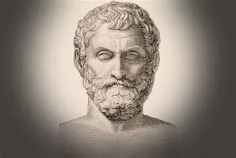

Welcome to the Mathematical World!
Thales of Miletus
Ancient Greek Mathematician, Philosopher, and Astronomer
Thales of Miletus (c. 624 BCE – c. 546 BCE) is usually considered the first mathematician in history and a founder of Greek science and philosophy. Born in Miletus, an Ionian city in Asia Minor (present-day Turkey), Thales traveled widely, studying with Egyptian and Babylonian scholars. History indicates that he brought geometry to Greece, having learned from Egyptian surveyors' mathematical methods. Thales was also one of the Seven Sages of Greece, renowned for practical wisdom and an analytical mind. His work marked the beginning of scientific thought in place of mythological explanations. He redirected explanations of natural phenomena from mythic to deductive causes, establishing the groundwork for scientific thinking.
Philosophy: Water as the Origin of Everything
Thales believed that everything in the universe originated from a single substance — and he proposed that substance was water.
- Water exists in three forms: solid (ice), liquid, and gas (vapor).
- All living things require water.
- Moisture is everywhere in nature.
So, he concluded that water was the essential element of all matter — a unifying principle behind all things. Although we now know water is not the fundamental substance of the universe, Thales’ thinking was revolutionary because he tried to explain nature using natural causes, not gods or myths.
“All Things Are Full of Gods”
Thales also believed that the universe was alive in a sense — that everything had a soul or divine force within it. When he said, “All things are full of gods,” he likely meant that nature itself has power and motion, not that literal deities live in everything. This view blended philosophy and early spiritual ideas and later influenced theories of motion and matter.
Astronomy and Predicting Eclipses
Thales studied the heavens and was one of the first to try and explain celestial events scientifically. According to ancient sources, he predicted a solar eclipse that occurred during a battle between the Medes and the Lydians in May 28, 585 BCE — an event that stopped the war. Whether he truly predicted it or not, the fact that he sought a natural pattern in the skies made him a pioneer in astronomy.
- The Earth is a flat disc floating on water.
- The Moon shines by reflecting the light of the Sun.
In astronomy, he astonished contemporaries by predicting a solar eclipse — a remarkable achievement for his era. Again, although not all his conclusions were correct, his method of reasoning and observation was groundbreaking for his time.
Work in Geometry
Thales brought mathematical knowledge from Egypt to Greece and laid the groundwork for Euclidean geometry. He is credited with several important geometric theorems and is believed to be the first person to use deductive reasoning in geometry. Thales was responsible for a number of significant geometrical discoveries, most famously Thales’ Theorem, which holds that any angle inscribed in a semicircle is a right angle.
- A circle is bisected by its diameter.
- Angles at the base of an isosceles triangle are equal.
- Opposite angles formed by two intersecting lines are equal.
- The angle in a semicircle is a right angle \((90^\circ)\).
He used geometry to solve real-world problems, such as calculating the height of pyramids by measuring shadows and the distance of ships offshore using similar triangles.
Legacy and Influence
Thales’ insistence on logical inference and abstract reasoning represents a significant shift from empirical methods to theoretical mathematics, shaping generations of thinkers, including other great mathematicians like Pythagoras and Euclid. He is remembered not just for what he discovered, but for how he thought — searching for natural principles and trying to explain the world using observation, logic, and deduction. This made him the first figure in the tradition of Western science and philosophy.
- Anaximander (his student)
- Pythagoras
- Plato
- Aristotle
Thales’ true importance lies in his belief that the universe is understandable — that humans can discover the truth about nature through reasoning rather than myth.